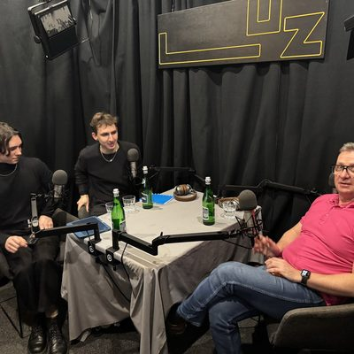
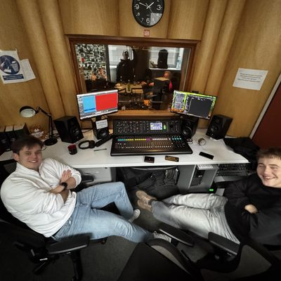
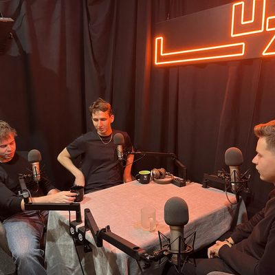
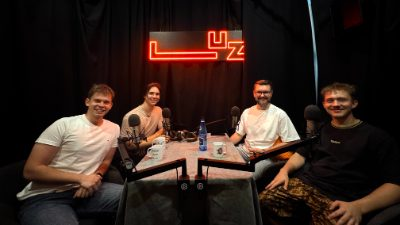

Podcast
Rozmowy o zarządzaniu, karierze i biznesie.
Podcast PMG wystartował na początku roku akademickiego 2025/2026 — nagrywamy w studiu Akademickiego Radia LUZ.
Edycja 1 (2025/2026)
Koordynator: Kacper Kotas
Mentorzy: Nikol Khmura, Marcel Wawryło
Zespół: Agnieszka Jachimiak, Michał Miszczuk, Szymon Adamczyk, Julia Twaróg, Oliwia Jantarska.
-

Prowadzący: Michał Miszczuk, Szymon Adamczyk
-

Prowadzący: Michał Miszczuk, Szymon Adamczyk
-

Prowadzący: Michał Miszczuk, Marcel Wawryło
-

Prowadzący: Szymon Adamczyk, Marcel Wawryło
Odcinek #1 · 12.02.2026 · ~41 min
Robert Kamiński: zmiana zarządzania na przestrzeni lat
- Prowadzący
- Michał Miszczuk, Szymon Adamczyk
- Gość
- dr hab. inż. Robert Kamiński
Posłuchaj na Spotify (otwiera się w nowej karcie) Posłuchaj na Apple Podcasts (otwiera się w nowej karcie)
Rozmowa o tym, jak zarządzanie zmieniło się na przestrzeni ostatnich trzech dekad — od sztywnych, podręcznikowych reguł z początku lat 90., gdy Robert Kamiński zaczynał studia na Wydziale Zarządzania, po dzisiejsze podejście oparte na realnych wyzwaniach organizacji i praktyce konsultingowej. Gość dzieli się doświadczeniem z wielu lat pracy jako niezależny konsultant przy projektach zarządzania strategicznego i zmian organizacyjnych dla dużych firm przemysłowych i usługowych. W rozmowie pojawia się też wątek sztucznej inteligencji — teza, że to człowiek musi nadawać technologii sens i wartości — a także „garażowe podejście” do budowania kariery i pomysł na granie we własną grę zamiast kopiowania cudzych ścieżek.
O gościu
Wykładowca Wydziału Zarządzania PWr, konsultant zarządzania strategicznego i zmian organizacyjnych (m.in. dla KGHM), autor kilku książek o zarządzaniu i kulturze organizacyjnej, wykładowca programu Executive MBA, profesor wizytujący na Uniwersytecie Technicznym w Dreźnie, były prodziekan Wydziału Zarządzania PWr.
Odcinek #2 · 24.03.2026 · ~37 min
Bartosz Stec: dlaczego doktorant zarządzania mówi „nie” korporacjom?
- Prowadzący
- Michał Miszczuk, Szymon Adamczyk
- Gość
- Bartosz Stec
Posłuchaj na Spotify (otwiera się w nowej karcie) Posłuchaj na Apple Podcasts (otwiera się w nowej karcie)
Rozmowa o doświadczeniach Bartosza Steca, który zamiast klasycznej kariery korporacyjnej wybrał ścieżkę akademicką na Wydziale Zarządzania PWr, gdzie zajmuje się m.in. tradycyjnym i zwinnym zarządzaniem projektami. Poruszamy temat jego filozofii kierowania zespołem, tego, co konkretnie odrzuca go od modelu pracy w wielkich organizacjach, oraz co motywuje go do działania poza utartymi schematami — łącznie z zaangażowaniem w rozwój studenckich organizacji i inicjatyw poza samą dydaktyką.
O gościu
Związany z Katedrą Zarządzania Projektami, Jakością i Logistyką na Wydziale Zarządzania PWr, zajmuje się tradycyjnym i zwinnym zarządzaniem projektami oraz rozwojem organizacji studenckich.
Odcinek #3 · 09.06.2026 · ~36 min
Marcel Sobecki: od organizacji studenckich do przewodniczącego SURE!
- Prowadzący
- Michał Miszczuk, Marcel Wawryło
- Gość
- Marcel Sobecki
Posłuchaj na Spotify (otwiera się w nowej karcie) Posłuchaj na Apple Podcasts (otwiera się w nowej karcie)
Marcel Sobecki zaczynał od studiów inżynierii biomedycznej — dopiero udział w konferencji PM Session przekonał go, żeby zrobić magisterkę z zarządzania na Politechnice Wrocławskiej. Dziś jako przewodniczący SURE! w europejskim sojuszu uczelni technicznych Unite! odpowiada za koordynację międzynarodowych zespołów studenckich. Rozmawiamy o łączeniu nauk technicznych z kompetencjami miękkimi, wyzwaniach zarządzania zespołem rozproszonym po kilku krajach oraz o tym, co realnie daje studentom zaangażowanie w organizacje akademickie.
O gościu
Z wykształcenia inżynier biomedyczny, po udziale w PM Session zdecydował się na studia magisterskie z zarządzania na PWr. Obecnie przewodniczący SURE! w europejskim sojuszu uczelni technicznych Unite!, odpowiada za współpracę międzynarodowych zespołów studenckich.
Odcinek #4 · 26.07.2026 · ~44 min
Karol Żuradzki: jak wspiąć się na szczyt firmy bez papierów
- Prowadzący
- Szymon Adamczyk, Marcel Wawryło
- Gość
- Karol Żuradzki
Posłuchaj na Spotify (otwiera się w nowej karcie) Posłuchaj na Apple Podcasts (otwiera się w nowej karcie)
Karol Żuradzki ma za sobą ponad dekadę w zarządzaniu dużymi markami gastronomicznymi i kawiarnianymi — od sieci typu KFC i Pizza Hut, przez rolę dyrektora regionalnego Starbucks w kilku krajach (Polska, Rumunia, Bułgaria), po obecne zaangażowanie w grupę Etno Cafe i platformę Pyszne.pl. Rozmawiamy o różnicach w zarządzaniu gastronomią w różnych krajach, codziennych problemach zarządczych w branży restauracyjnej i o tym, jak — bez formalnych kwalifikacji na starcie — dojść do stanowisk dyrektorskich w wielkich firmach gastronomicznych, oraz jakie cechy organizacji faktycznie sprzyjają rozwojowi pracownika.
O gościu
Manager z ponad 12-letnim doświadczeniem w branży gastronomicznej i kawiarnianej (m.in. KFC, Pizza Hut, Starbucks, Etno Cafe), pracował jako dyrektor regionalny/generalny w kilku krajach (Polska, Rumunia, Bułgaria). Obecnie związany z grupą Etno Cafe oraz platformą Pyszne.pl, prowadzi też własną działalność konsultingową w gastronomii.